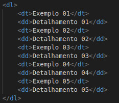

A lista não ordenada não lhe possibilita trocar de marcador. Veja um exemplo dessa lista:
- Exemplo 1
- Exemplo 2
- Exemplo 3
- Exemplo 4
Existem três tipos de listas dentro do HTML: não ordenada, ordenada e detalhada. Elas servem para criar tópicos, numera-los, organiza-los, etc.
A lista não ordenada não lhe possibilita trocar de marcador. Veja um exemplo dessa lista:
A lista ordenada lhe possibilita trocar de marcador, você pode trocar o marcador sem código CSS.
Exemplo:
Código usado:

Com as listas detalhadas você pode mostrar um item e logo em seguida o detalhar.
Exemplo:
Código usado:
